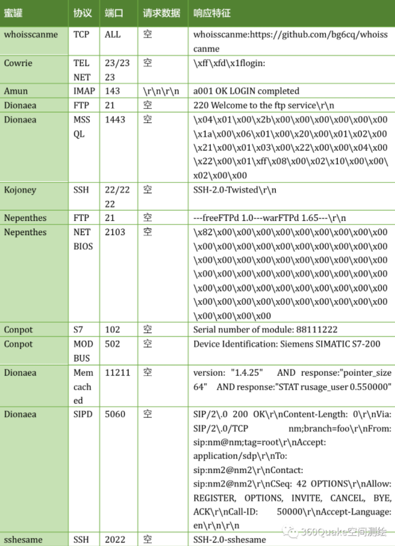

SEC学习2023版-0018
主机架构&蜜罐识别&WAF识别&端口扫描&协议识别&服务安全
常见端口安全
| 端口 | 服务 | 渗透用途 |
|---|---|---|
| tcp 20,21 | FTP | 允许匿名的上传下载,爆破,嗅探,win提权,远程执行(proftpd 1.3.5),各类后门(proftpd,vsftp 2.3.4) |
| tcp 22 | SSH | 可根据已搜集到的信息尝试爆破,v1版本可中间人,ssh隧道及内网代理转发,文件传输等等 |
| tcp 23 | Telnet | 爆破,嗅探,一般常用于路由,交换登陆,可尝试弱口令 |
| tcp 25 | SMTP | 邮件伪造,vrfy/expn查询邮件用户信息,可使用smtp-user-enum工具来自动跑 |
| tcp/udp 53 | DNS | 允许区域传送,dns劫持,缓存投毒,欺骗以及各种基于dns隧道的远控 |
| tcp/udp 69 | TFTP | 尝试下载目标及其的各类重要配置文件 |
| tcp 80-89,443,8440-8450,8080-8089 | 各种常用的Web服务端口 | 可尝试经典的topn,vpn,owa,webmail,目标oa,各类Java控制台,各类服务器Web管理面板,各类Web中间件漏洞利用,各类Web框架漏洞利用等等…… |
| tcp 110 | POP3 | 可尝试爆破,嗅探 |
| tcp 111,2049 | NFS | 权限配置不当 |
| tcp 137,139,445 | Samba | 可尝试爆破以及smb自身的各种远程执行类漏洞利用,如,ms08-067,ms17-010,嗅探等…… |
| tcp 143 | IMAP | 可尝试爆破 |
| udp 161 | SNMP | 爆破默认团队字符串,搜集目标内网信息 |
| tcp 389 | LDAP | ldap注入,允许匿名访问,弱口令 |
| tcp 512,513,514 | Linux rexec | 可爆破,rlogin登陆 |
| tcp 873 | Rsync | 匿名访问,文件上传 |
| tcp 1194 | OpenVPN | 想办法钓VPN账号,进内网 |
| tcp 1352 | Lotus | 弱口令,信息泄漏,爆破 |
| tcp 1433 | SQL Server | 注入,提权,sa弱口令,爆破 |
| tcp 1521 | Oracle | tns爆破,注入,弹shell… |
| tcp 1500 | ISPmanager | 弱口令 |
| tcp 1723 | PPTP | 爆破,想办法钓VPN账号,进内网 |
| tcp 2082,2083 | cPanel | 弱口令 |
| tcp 2181 | ZooKeeper | 未授权访问 |
| tcp 2601,2604 | Zebra | 默认密码zerbra |
| tcp 3128 | Squid | 弱口令 |
| tcp 3312,3311 | kangle | 弱口令 |
| tcp 3306 | MySQL | 注入,提权,爆破 |
| tcp 3389 | Windows rdp | shift后门[需要03以下的系统],爆破,ms12-020 |
| tcp 3690 | SVN | svn泄露,未授权访问 |
| tcp 4848 | GlassFish | 弱口令 |
| tcp 5000 | Sybase/DB2 | 爆破,注入 |
| tcp 5432 | PostgreSQL | 爆破,注入,弱口令 |
| tcp 5900,5901,5902 | VNC | 弱口令爆破 |
| tcp 5984 | CouchDB | 未授权导致的任意指令执行 |
| tcp 6379 | Redis | 可尝试未授权访问,弱口令爆破 |
| tcp 7001,7002 | WebLogic | Java反序列化,弱口令 |
| tcp 7778 | Kloxo | 主机面板登录 |
| tcp 8000 | Ajenti | 弱口令 |
| tcp 8009 | tomcat | Ajp Tomcat-Ajp协议漏洞 |
| tcp 8443 | Plesk | 弱口令 |
| tcp 8069 | Zabbix | 远程执行,SQL注入 |
| tcp 8080-8089 | Jenkins,JBoss | 反序列化,控制台弱口令 |
| tcp 9080-9081,9090 | WebSphere | Java反序列化/弱口令 |
| tcp 9200,9300 | ElasticSearch | 远程执行 |
| tcp 11211 | Memcached | 未授权访问 |
| tcp 27017,27018 | MongoDB | 爆破,未授权访问 |
| tcp 50070,50030 | Hadoop | 默认端口未授权访问 |
| 蜜罐 | Quake系统搜索语法 |
|---|---|
| STRUTSHONEYPOT | app:”StrutsHoneypot” |
| CONPOT HTTP 蜜罐 | app:”Conpot Http 蜜罐” |
| CONPOT MODBUS 蜜罐 | app:”Conpot modbus 蜜罐” |
| CONPOT S7 蜜罐 | app:”Conpot s7 蜜罐” |
| KIPPO 蜜罐 | app:”kippo 蜜罐” |
| HONEYPY HTTP 蜜罐 | app:”Honeypy Http 蜜罐” |
| HONEYPY ES蜜罐 | app:”Honeypy ES蜜罐” |
| AMUN IMAP 蜜罐 | app:”amun imap 蜜罐” |
| AMUN HTTP蜜罐 | app:”amun http蜜罐” |
| NEPENTHES NETBIOS蜜罐 | app:”Nepenthes netbios蜜罐” |
| NEPENTHES FTP 蜜罐 | app:”Nepenthes FTP 蜜罐” |
| SSHESAME SSH 蜜罐 | app:”sshesame ssh 蜜罐” |
| OPENCANARY蜜罐管理后台 | app:”opencanary蜜罐管理后台” |
| DIONAEA SIPD 蜜罐 | app:”Dionaea sipd 蜜罐” |
| DIONAEA SMBD 蜜罐 | app:”Dionaea smbd 蜜罐” |
| DIONAEA HTTP 蜜罐 | app:”Dionaea Http 蜜罐” |
| DIONAEA MSSQL 蜜罐 | app:”Dionaea MSSQL 蜜罐” |
| DIONAEA FTP 蜜罐 | app:”Dionaea ftp 蜜罐” |
| DIONAEA MEMCACHED 蜜罐 | app:”Dionaea Memcached 蜜罐” |
| KOJONEY SSH 蜜罐 | app:”Kojoney SSH 蜜罐” |
| WEBLOGIC蜜罐 | app:”weblogic蜜罐” |
| MYSQL蜜罐 | app:”MySQL蜜罐” |
| HFISH蜜罐 | app:”HFish蜜罐” |
| HFISH蜜罐管理后台 | app:”HFish蜜罐管理后台” |
| HONEYTHING物联网蜜罐 | app:”honeything物联网蜜罐” |
| ELASTICSEARCH蜜罐 | app:”elasticsearch蜜罐” |
| HOSTUS蜜罐 | app:”HostUS蜜罐” |
| WHOISSCANME蜜罐 | app:”whoisscanme蜜罐” |
| 未知蜜罐 | app:”未知蜜罐” |
| COWRIE TELNETD蜜罐 | app:”Cowrie telnetd蜜罐” |
| GLASTOPF蜜罐 | app:”glastopf蜜罐” |

识别-Web服务器-请求返回包
识别-应用服务器-端口扫描技术
识别-其他服务协议-端口扫描技术
- Web中间件探针
- 应用中间件探针
- 数据库类型探针
- 其他服务协议探针
端口扫描：Nmap、Masscan、网络空间(fofa)
开放状态：Close Open Filtered
官网 |
识别-WAF防火墙-看图&项目&指纹
1、WAF解释：
Web应用防护系统（也称为：网站应用级入侵防御系统。英文：Web Application Firewall，简称：WAF）。
利用国际上公认的一种说法：Web应用防火墙是通过执行一系列针对HTTP/HTTPS的安全策略来专门为Web应用提供保护的一款产品。
一句话：保证web安全，一般是绕不过的。
拿到泄露数据一提交，算漏洞，拿奖金。
2、WAF分类：
云WAF：百度安全宝、阿里云盾、长亭雷池，华为云，亚马逊云等 –面向客户：中大型企业，大黑产，擦边等
硬件WAF：绿盟、安恒、深信服、知道创宇等公司商业产品 –面向客户：中大型企业，国企军工等
软件WAF：宝塔，安全狗、D盾等 –面向客户：小众型软件，黑X没钱的–目前能绕过的前三者较为常见
看见其他安全产品要绕过–>直接跑路，因为最多只能绕过无关紧要的东西
代码级WAF：自己写的waf规则，防止出现注入等，一般是在代码里面写死的
3、识别看图：
拦截页面，identywaf项目内置
4、识别项目：
*下载wafw00f
wafw00f-2.2.0 使用Python setup.py install 安装，进入wafw00f目录调用main函数对网站的WAF进行识别。 |
*下载identywaf
网络空间也可以分析网站有哪些WAF。
识别-蜜罐平台-人工&网络空间&项目
蜜罐解释：
蜜罐是一种安全威胁的检测技术，其本质在于引诱和欺骗攻击者，并且通过记录攻击者的攻击日志来产生价值。
安全研究人员可以通过分析蜜罐的被攻击记录推测攻击者的意图和手段等信息。
攻击方可以通过蜜罐识别技术来发现和规避蜜罐。
因此，我们有必要站在红队攻击者的角度钻研蜜罐识别的方式方法。蜜罐分类：
根据蜜罐与攻击者之间进行的交互的程度可以将蜜罐分为三类:低交互蜜罐、中交互蜜罐、高交互蜜罐。
当然还可以根据蜜罐模拟的目标进行分类，比如：数据库蜜罐、工控蜜罐、物联网蜜罐、Web蜜罐等等。蜜罐产品：
见上图识别原理：
点我看文章识别技术：
0、测试安装
蜜罐搭建大概了解组成功能等
quake.exe init apikey值 |
2、人工
- 端口多而有规律性
- 规律性是指：端口排序的规律性，例如9806,9807,9808…
- Web访问协议就下载
- ssh，mysql应用蜜罐
- 攻击时记录账密
- 采用jsonp传输
- web http访问该端口，采用协议下载文件
- 简单来说，就是蜜罐再怎么模拟也还是web功能。
- 设备指纹分析（见上图）
人工分析：平台无法分析出来的时候得靠人工。
是否是蜜罐的分析方式：平台+软件+人工分析。
 wechat
wechat alipay
alipay


微信号：无
QQ：无
--------------------------------每日更新指南：
刷题/记录总知识一般会沿用上次的文档
学习新知将新开文档